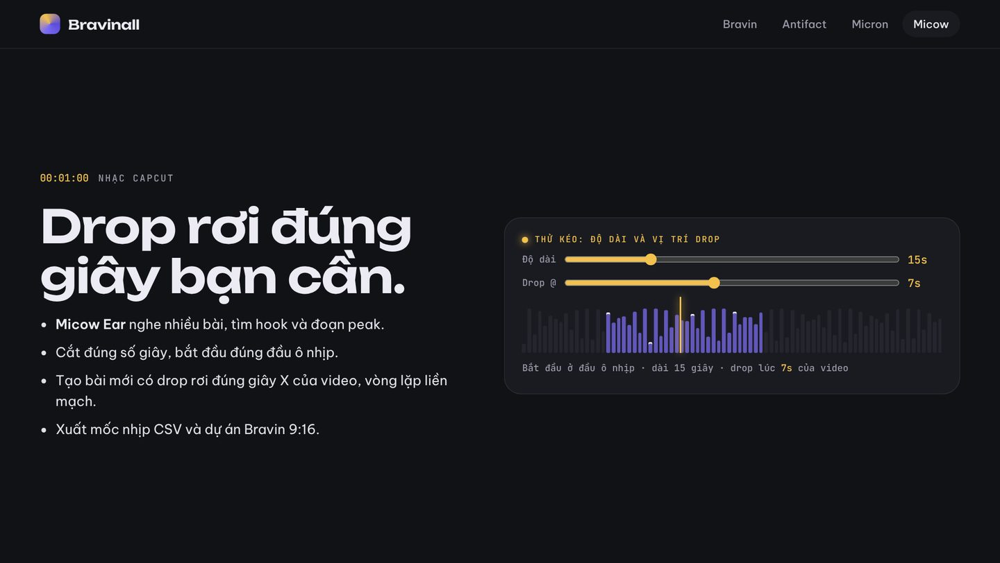

Phạm Việt Hà
Phạm Việt Hà
Mục lục
Video ngắn trên TikTok hay CapCut thường "nổ" ở đúng một khoảnh khắc: cú chuyển cảnh, cú lộ mặt, cú biến hình. Nếu drop của nhạc rơi đúng khoảnh khắc đó, video mạnh hơn hẳn. Bài này hướng dẫn làm việc đó bằng Micow, mô hình làm nhạc chạy trên máy do Phạm Việt Hà (HAVVKING) xây.

Bạn cần gì
- Máy tính có Python 3.10 trở lên, CPU bất kỳ (không cần GPU).
- Micow đã cài, theo lệnh trên trang giới thiệu Micow.
- Một vài bài nhạc bạn có quyền sử dụng (mp3, wav…), nếu muốn cắt từ bài có sẵn.
Cách 1: cắt đoạn hay nhất của một bài
Micow Ear nghe bài, tìm phách, đầu ô nhịp, cấu trúc (intro, verse, chorus, drop) và chỉ ra hook cùng đoạn peak.
Bước 1: xem cấu trúc và hook của vài bài cùng lúc.
micow ear bai1.mp3 bai2.mp3 bai3.mp3Bước 2: cắt 15 giây bắt đầu từ hook, đúng đầu ô nhịp.
micow capcut bai1.mp3 -d 15Không thích hook đầu tiên? Micow đưa ra 3 ứng viên, chọn cái khác bằng --candidate 1 hoặc --candidate 2.
Cách 2: đặt drop rơi đúng giây X
Giả sử khoảnh khắc đắt nhất của video nằm ở giây 7. Bạn muốn một đoạn nhạc 30 giây có drop rơi đúng giây 7, phát lặp liền mạch:
micow capcut bai1.mp3 -d 30 --peak-at 7 --loopMicow tính ngược từ cú drop để chọn điểm bắt đầu, sao cho drop rơi đúng giây bạn chọn.
Cách 3: tạo nhạc nền mới
Không có bài nào vừa ý? Tạo mới bằng Micow Beat: hook vang ngay giây đầu, build-up rồi drop đúng giây bạn chọn. Micow tự chỉnh tempo để drop rơi đúng đầu ô nhịp.
micow capcut --gen -s "vinahouse sôi động, sáo" -d 15 --peak-at 7Thay phần mô tả phong cách bằng thứ bạn muốn: "drill tối, 808 trượt", "lo-fi nhẹ nhàng", "bolero"…

Dùng giao diện thay vì dòng lệnh
Không quen dòng lệnh? Chạy micow serve --open để mở giao diện web của Micow, vào trang Nhạc CapCut, thả bài, kéo thanh độ dài và vị trí drop. Nếu Micow chọn hook chưa đúng tai bạn, bấm Đúng hook trên ứng viên bạn thích, rồi chạy micow train ear để Micow học theo tai bạn.
Đưa sang CapCut hoặc Bravin
- CapCut: nhập tệp nhạc vừa xuất, đặt đầu nhạc ở đầu video. Drop sẽ rơi đúng giây bạn đã chọn.
- Bravin: Micow xuất mốc nhịp
.csvđể cắt cảnh theo nhịp và dự án Bravin 9:16, mở trong Bravin để dựng video dọc theo đúng nhịp nhạc.
Mẹo nhỏ
- Video 15 giây: đặt drop ở khoảng giây 5–7 để người xem kịp tò mò rồi "nổ".
- Dùng
--loopkhi video có thể phát lặp, để không bị khựng ở điểm nối. - Chỉ dùng nhạc bạn có quyền sử dụng khi đăng công khai.
 Đọc thêmMicow: mô hình làm nhạc chạy trên máy do HAVVKING (Phạm Việt Hà) xây
Đọc thêmMicow: mô hình làm nhạc chạy trên máy do HAVVKING (Phạm Việt Hà) xây